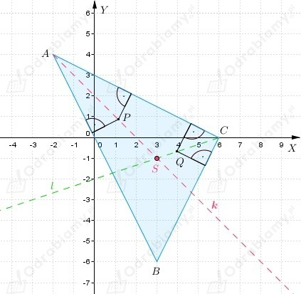
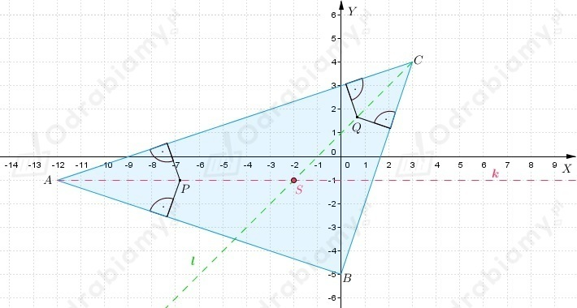

a)
Z treści zadania wiemy, że punkty
są wierzchołkami trójkąta w który wpisano okrąg.
Środek okręgu wpisanego w trójkąt jest punktem przecięcia dwusiecznych kątów trójkąta.
Spójrzmy na rysunek

Wyznaczamy równanie prostej AC
Wyznaczamy równanie prostej AB
Wyznaczmy równanie prostej BC
Dwusieczna kąta CAB (półprosta k na rysunku powyżej) jest zbiorem punktów
równo odległych od ramion kąta CAB.
Rozważmy punkt P(x, y) należący do dwusiecznej kąta CAB.
Odległość punktu P od ramienia AC jest równa
Odległość punktu P od ramienia AB jest równa
Otrzymujemy równanie
Dwusieczna kąta CAB jest zawarta w prostej y=-x+2 (prosta y=x+6 zawiera dwusieczne
kątów rozwartych utworzonych przez proste AC i AB).
Dwusieczna kąta ACB (półprosta l na rysunku powyżej) jest zbiorem punktów
równo odległych od ramion kąta ACB.
Rozważmy punkt Q(x1, y1) należący do dwusiecznej kąta ACB.
Odległość punktu Q od ramienia BC jest równa
Odległość punktu Q od ramienia AC jest równa
Otrzymujemy równanie
Dwusieczna kąta ACB jest zawarta w prostej y=1/3x-2 (prosta y=-3x+18 zawiera dwusieczne
kątów rozwartych utworzonych przez proste AC i BC).
Wyznaczamy współrzędne środka okręgu wpisanego w trójkąt ABC, czyli
punkt przecięcia dwusiecznej kąta CAB i kąta ACB.
Zatem S(3, -1).
b)
Z treści zadania wiemy, że punkty
są wierzchołkami trójkąta w który wpisano okrąg.
Środek okręgu wpisanego w trójkąt jest punktem przecięcia dwusiecznych kątów trójkąta.
Spójrzmy na rysunek

Wyznaczamy równanie prostej AC
Wyznaczamy równanie prostej AB
Wyznaczmy równanie prostej BC
Dwusieczna kąta CAB (półprosta k na rysunku powyżej) jest zbiorem punktów
równo odległych od ramion kąta CAB.
Rozważmy punkt P(x, y) należący do dwusiecznej kąta CAB.
Odległość punktu P od ramienia AC jest równa
Odległość punktu P od ramienia AB jest równa
Otrzymujemy równanie
Dwusieczna kąta CAB jest zawarta w prostej y=-1 (prosta x=-12 zawiera dwusieczne
kątów rozwartych utworzonych przez proste AC i AB).
Dwusieczna kąta ACB (półprosta l na rysunku powyżej) jest zbiorem punktów
równo odległych od ramion kąta ACB.
Rozważmy punkt Q(x1, y1) należący do dwusiecznej kąta ACB.
Odległość punktu Q od ramienia BC jest równa
Odległość punktu Q od ramienia AC jest równa
Otrzymujemy równanie
Dwusieczna kąta ACB jest zawarta w prostej y=x+1 (prosta y=-x+7 zawiera dwusieczne
kątów rozwartych utworzonych przez proste AC i BC).
Wyznaczamy współrzędne środka okręgu wpisanego w trójkąt ABC, czyli
punkt przecięcia dwusiecznej kąta CAB i kąta ACB.
Zatem S(-2, -1).